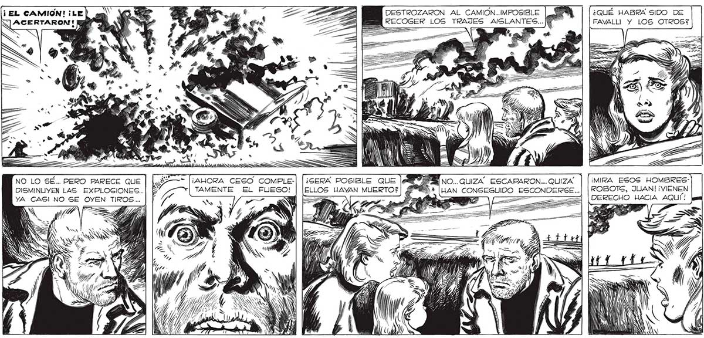
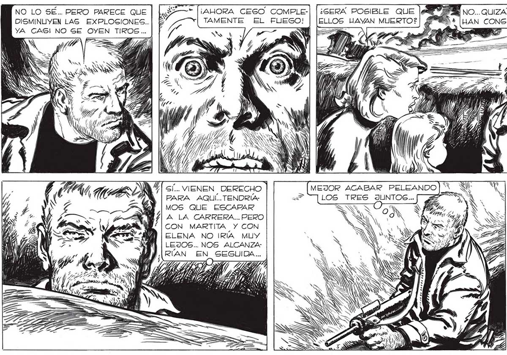

348 NO LO SÉ.. PERO PARECE QUE | DISMINUYEN LAS EXPLOGSIONES.. YA CAS! NO SE OYEN TIROS... SÍ... VIENEN DERECHO | PARA AQUÍ... TENDRÍAMOS QUE ESCAPAR A LA CARRERA... PERO CON MARTITA Y CON ELENA NO IRÍA MUY LEJOS.. NOS ALCANZARÍAN EN SEGUIDA... 9 > TD) , el ¡AHORA CESO COMPLETAMENTE EL FUEGO! | 5 ¡3 4 ¿GERÁA POSIBLE QUE ELLOS HAYVAN MUERTO? | === AS SV só A MY, m0) pl Vi (A y 1d X N N S SN x ¿QUÉ HABRA SIDO DE FAVALLI Y LOS OTROS? ¡MIRA ESOS HOMBRESROBOTS, JUAN! ¡VIENEN DERECHO HACIA AQUI: a =>. % m2 e a Y Pd A la A Zi E 2 === fret, / > OS IS D Ry Noval VAN NÓ NW | LOS RECIBIRÉ A TIROS, ELENA... VAYAN ALEJANDOSE POR EL ZANJON... EN SEGUIDA VOY YO, CUAN¿QUÉ HARAS, JUAN? , 80 o a y J ( SS A, - x= AS

